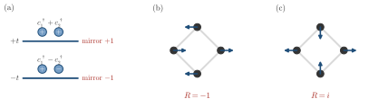

Advanced Quantum Materials 2027 · All lectures · Lecture notes
Session 2. Symmetries, Tight-Binding Band Structure Theory, and Effective Models
2.3 Symmetry operators in a formal way
To make the argument from electromagnetism precise for a quantum system, we need three objects. The first is a wavefunction \(\psi\), the second is the transformed wavefunction \(\phi = S\psi\) that we obtain when we apply a symmetry operation, and the third is the operator \(S\) itself, which is a linear map from one to the other and a matrix in a finite-dimensional representation. A concrete case makes this clear. If \(\psi\) is a \(p_x\) orbital and \(S\) is a \(90^\circ\) rotation, the transformed state \(\phi = S\psi\) is a \(p_y\) orbital, meaning that the two lobes on the \(x\)-axis are rotated into two lobes on the \(y\)-axis. Note that this \(p_x\) orbital is not an eigenstate of the rotation, since it is mapped to a different state.
Symmetry operators are always unitary. In physical terms, a symmetry is only a change of labels of our reference frame, for example a rotation of the axes, and any such change of labels must keep the norm of every state in the Hilbert space. In equations,
\[S^\dagger S = S S^\dagger = \mathbb{1}, \qquad S^\dagger = S^{-1}. \tag{2.1}\]
A direct consequence is that all the eigenvalues of \(S\) have unit modulus, since \(\langle\psi|S^\dagger S|\psi\rangle = \langle\psi|\psi\rangle\) gives \(|\lambda|^2=1\) for any eigenvalue \(\lambda\). So a symmetry eigenvalue can always be written as a pure phase,
\[S|\psi\rangle = e^{i\varphi}|\psi\rangle, \qquad \varphi \in (-\pi,\pi]. \tag{2.2}\]
Before we include a Hamiltonian, let us look at two small examples. We take a wavefunction with real, staggered values \((+1,-1,+1,-1)\) on four sites on a ring, and we apply a \(90^\circ\) rotation that shifts the sites by one in a cyclic way. The transformed wavefunction is \((-1,+1,-1,+1)\), which is \(-1\) times the original. So this state is an eigenstate of the rotation with eigenvalue \(-1\), that is \(\varphi=\pi\) in (2.2). Now we take a complex wavefunction \((+1,-i,-1,i)\) on the same ring and apply the same rotation. The transformed wavefunction is \(i\) times the original, so it is an eigenstate with eigenvalue \(i\), that is \(\varphi=\pi/2\).
On the four-site ring the rotation moves every amplitude to the next site, as above. What is the eigenvalue of the state \((1,i,-1,-i)\)?
Show the answers
- A. ✗ False
This is false. The shifted state is \((-i,1,i,-1)\). An eigenvalue \(i\) would give \((i,-1,-i,1)\), and the first components \(-i\) and \(i\) differ.
- B. ✓ True
This is true. The shifted state is \((-i,1,i,-1)\), which is \(-i\) times the original. So the state is an eigenstate with eigenvalue \(-i\), that is \(\varphi=-\pi/2\) in (2.2).
- C. ✗ False
This is false. An eigenvalue \(1\) would leave the state unchanged, but the first component goes from \(1\) to \(-i\). The state with eigenvalue \(1\) is \((1,1,1,1)\).
Applying the rotation once and comparing with the original state gives the eigenvalue directly.
The next example is less visual but more useful in practice. A two-site tight-binding Hamiltonian with a single hopping \(t\) between sites 1 and 2,
\[H = t\left(c_1^\dagger c_2 + c_2^\dagger c_1\right),\]
has two eigenstates, the bonding and antibonding combinations \(c_1^\dagger+c_2^\dagger\) and \(c_1^\dagger-c_2^\dagger\). Under the mirror symmetry that exchanges sites 1 and 2, the bonding state has eigenvalue \(+1\) and the antibonding state has eigenvalue \(-1\). This means that different eigenstates of the same Hamiltonian can have different eigenvalues under the same symmetry. Schematic 2.2 shows the eigenvalues of the dimer and of the two rings.

We now come to the central fact of this session. Let us assume that a Hamiltonian is invariant under a symmetry operation, \(SHS^{-1} = SHS^\dagger = H\), which is the same as the statement
\[[H,S] = 0. \tag{2.3}\]
From linear algebra we know that two operators that commute have a common eigenbasis. So whenever (2.3) holds, every eigenstate of \(H\) can be chosen so that it is also an eigenstate of \(S\). In the words of the lecturer, this is perhaps the most important idea of this session. The reason for this is that it is very often much easier to classify the eigenstates of a symmetry operator, whose eigenvalue is a simple phase by (2.2), than to classify the eigenstates of the Hamiltonian directly. In practice, this means that to find all the symmetries of the Hamiltonian is the first step to solve it, and the most useful one, not a side remark. Once we know that a matrix \(S\) commutes with \(H\), to classify the eigenstates of \(S\) is the same task as to classify the eigenstates of \(H\).
A Hamiltonian commutes with \(S\), and \(\psi\) is a nondegenerate eigenstate of \(H\). What do we know about \(S\psi\)?
Show the answers
- A. ✓ True
This is true. Since \([H,S]=0\), the state \(S\psi\) is an eigenstate with the same energy. The level is nondegenerate, so \(S\psi\) can differ from \(\psi\) only by a number, which is a phase by (2.2).
- B. ✗ False
This is false. Take a ring with nearest-neighbor hopping and the rotation \(S\). The state \((1,1,1,1)/2\) is the nondegenerate ground state, and \(S\psi=\psi\), so the overlap \(\langle\psi|S\psi\rangle=1\) is not zero.
- C. ✗ False
This is false. On the ring, \(S\psi\) is again a Fourier mode with \(\epsilon=-2t\cos\varphi\), the same energy as \(\psi\). In general \(HS\psi=SH\psi=ES\psi\).
The symmetry maps the eigenstate into the same level, and a single level leaves only a phase.